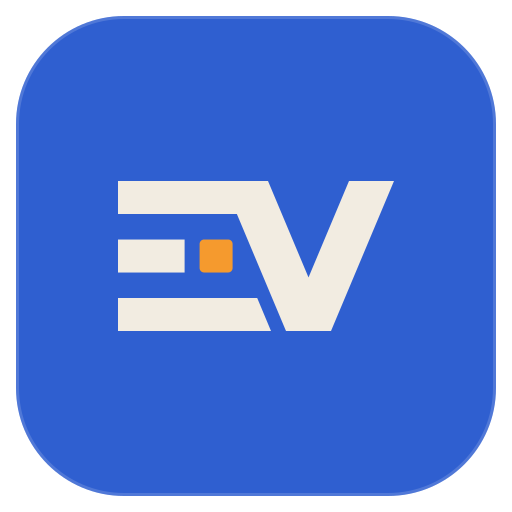
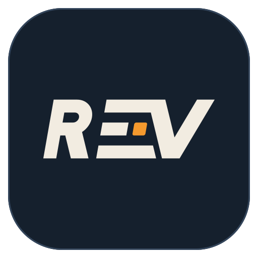

How the models are made
Off the board, once per release, in a private repository. The board only runs the result.
Drive data
public datasets
plus drives of
my own car

Train E.V (QAT)
quantisation-aware:
the chip's integer
rounding is in trainingTest
held-out drives
and cars it
never saw
CarMind E.V
38,679 parameters,
89 KB
Compress
structured pruning:
whole channels go,
half the parameters
Fine-tune (KD)
learns to match E.V,
its teacher, on more
public drives
Quantise and test
int8 weights, then cars
it never saw, with
airflow hidden

CarMind R.E.V
19,815 parameters,
66 KB, learns
in the cardesign
teacher
Tested with the airflow reading hidden, because that is the case R.E.V's learners on the board exist for.